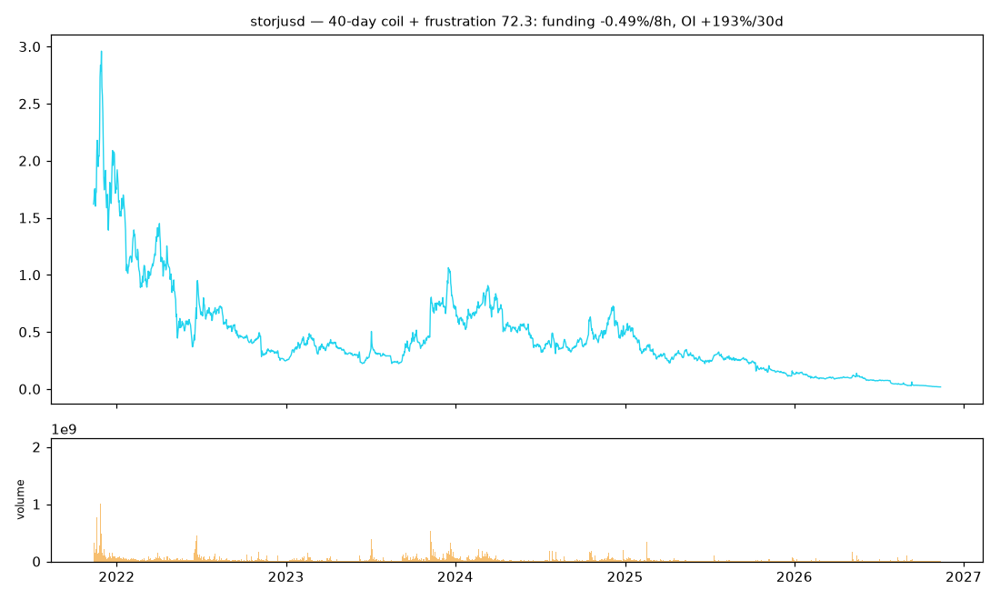
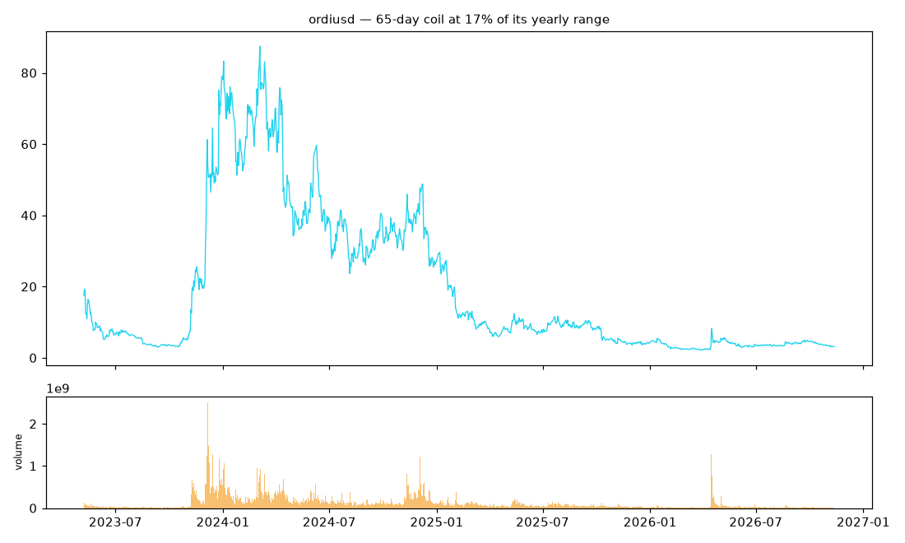
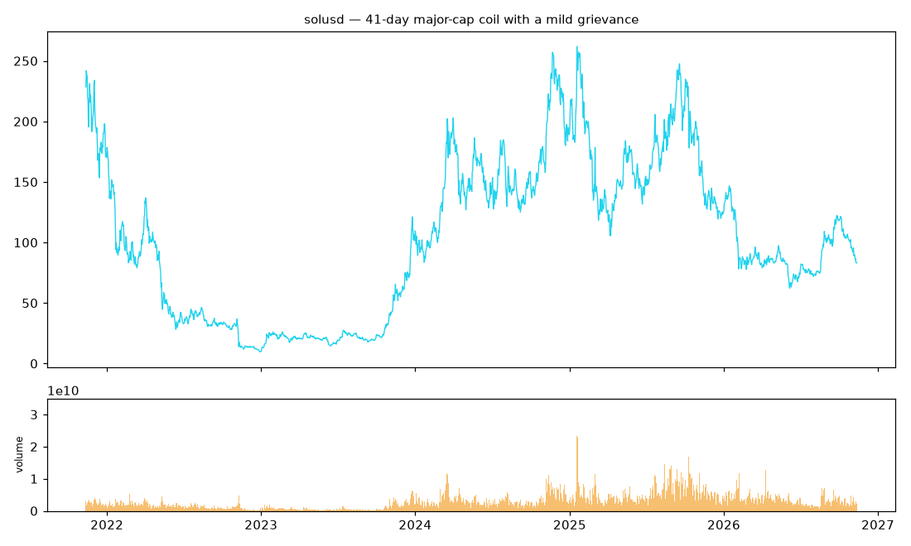
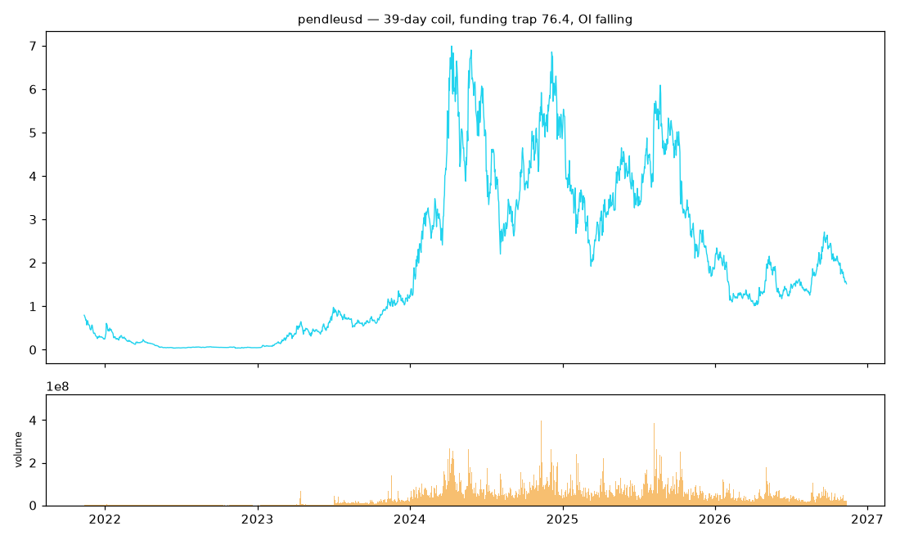
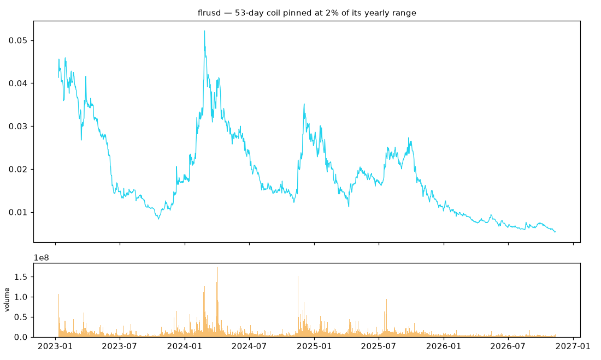
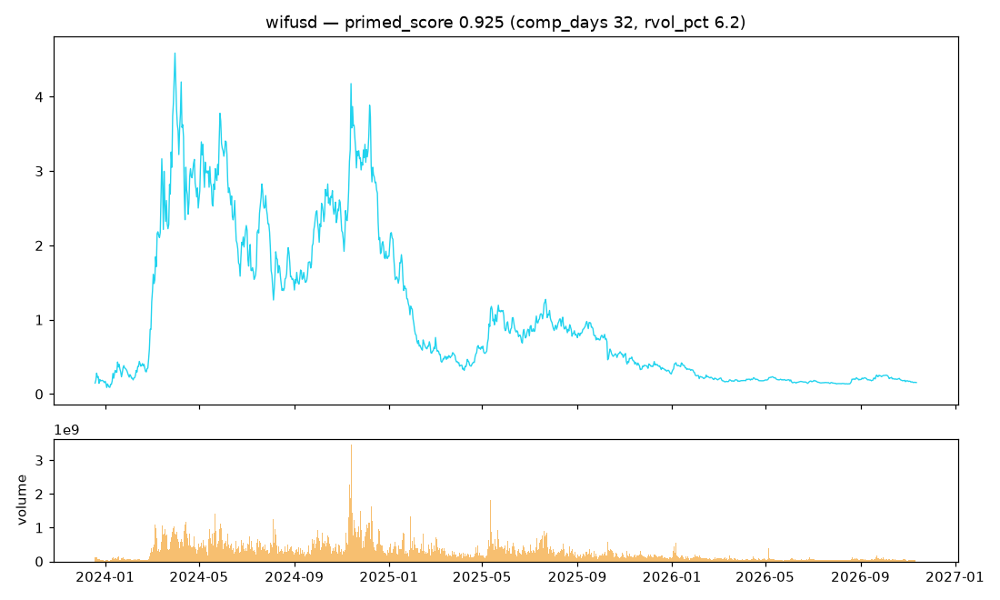
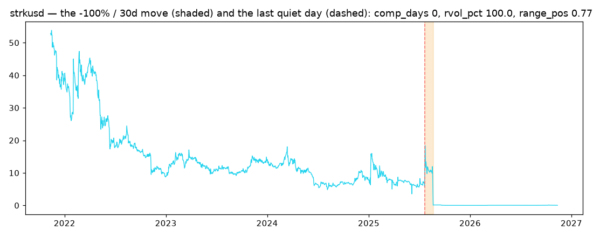
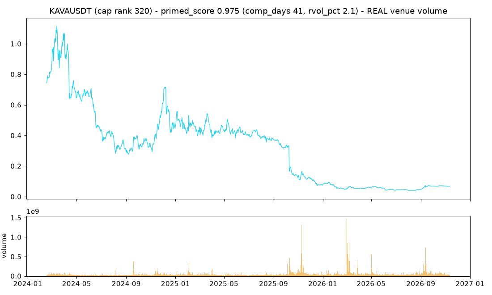
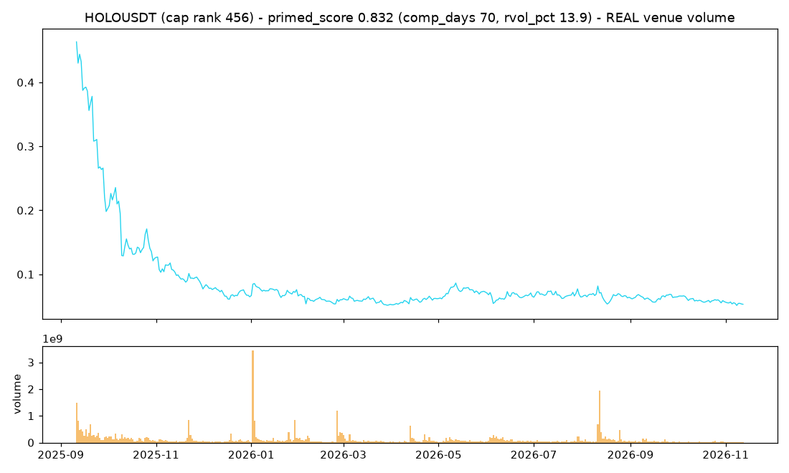
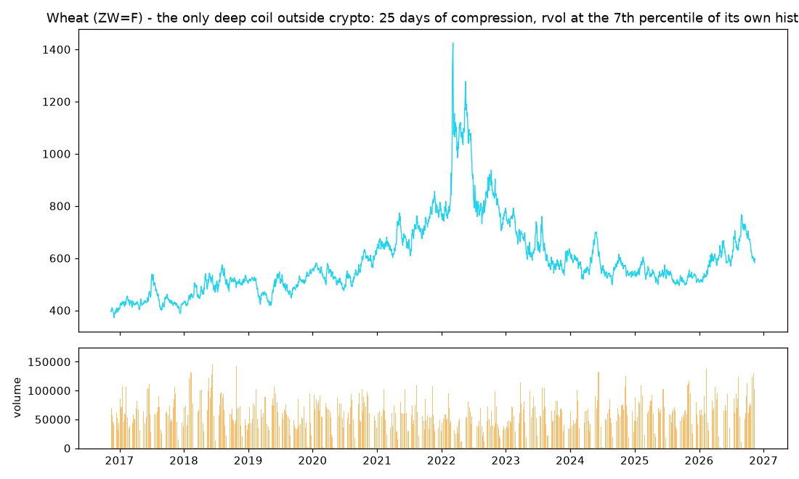

The Clue Dossier.
— after Revolver. So we searched every room. Five hundred and thirty-two of them.
This page is the visual record of the clue program: every chart collected in the search for WHAT — the coiled candidates, their measured grievance, the case file of the biggest moves, and the per-class verdict that confined the clues to crypto. Read it in the order it was found. And read the last section first if you are in a hurry: everything here is descriptive — candidates, not claims. C7's kill lines are the only path from this dossier to knowledge.
1. The coiled candidates — the springs
From the scan of 204 series: 39 deep coils (≥ 20 consecutive days in the series' own lowest volatility tercile), 37 of them crypto. The top candidates, price and volume, with the scan's reading of each:








2. The grievance — the structural frustration, quantified
The same three pre-declared metrics that caught FTX twelve days early (funding trap, OI divergence, basis extreme), scored per candidate on each one's own Binance perp data:

| Candidate | Coil (days) | Frustration | The grievance, in numbers |
|---|---|---|---|
| storjusd | 40 | 72.3 | funding −0.49%/8h (trap 75.5), OI +193%/30d against a coiled price — both legs at once. FLAG: 24 aligned perp days |
| pendleusd | 39 | 35.0 | funding trap 76.4, OI −30% — grievance without coiling |
| solusd | 41 | 25.7 | mildly negative funding, OI +8% |
| santosusd | 64 | 15.0 | basis extreme 74.8, positioning calm |
| ksmusd | 23 | 14.8 | OI divergence 23.6 |
| yggusd | 143 | 14.6 | the deepest coil, calm positioning |
| kavausd | 40 | 13.9 | highest primed score (0.992), quiet positioning |
Thirteen candidates have no Binance perp (TVC-only pairs) — flagged, not
hidden. The full table is committed at
paper/research/clue_scan/panel_frustration.csv.
3. The case file — how the big moves were anticipated
The biggest genuine moves in the panel, with the pre-move state reconstructed causally at the last quiet day (data artifacts — re-denominations and launch-era near-zero prices — were flagged and excluded before this file was written):



4. The per-class verdict — why the clues are in crypto
| Class | Series | Deep coils | Median |10-day move| after coil exit | Coil exits with a >4σ day |
|---|---|---|---|---|
| Crypto | 160 | 37 of 39 | 9.27% | 37.5% |
| Indexes | 20 | 0 | 2.13% | 11.8% |
| Commodities | 24 | 2 | 2.74% | 13.4% |
Deep compression is a crypto phenomenon, and crypto coil-exits detonate rather than unfold — the EW-defying signature, measured: the release does not arrive in orderly countable waves.
5. The genesis signature — the start contains the extreme
Of the 24 pairs with true launch-era data, the all-time high of the entire available history still sits in the first 90 days for 29.2% — four times the random-window null of 7.2%. Seven pairs never again approached their launch-window high. Those who knew the WHAT were there from the beginning; the chart remembers.
6. The whole board — the top-500 scan
The directive was to stop looking at the 160-pair panel and look at the whole board: the top 500 crypto assets by market cap. The universe was built from a dated CoinGecko snapshot (2026-11-12) and mapped to Binance USDT-M perpetuals, then extended to Binance spot pairs for the coins with no perp. The honest coverage number: 249 of the top 500 have a Binance market with enough history — 212 perps + 29 spot. The remaining 251 have no Binance market at all (DEX-native, delisted, or tokenized stocks); they are listed as unmapped in the universe file, not silently dropped. One material upgrade over the TVC panel: Binance volume is real venue volume — the synthetic-volume flag that binds every TVC reading does not apply here.
What the whole board shows, descriptively:
- The board is bleeding while it coils. The median 30-day return across the 212 perps is −25%; 151 of 212 moved more than 20% in the last 30 days. This is a broad alt-market markdown regime — and the artifact filter matters more here than anywhere: a coil measured after a −90% move is a different animal from a coil at rest, so every candidate below is filtered for move-already-happened.
- The enemy hid in the last place again. The first pass of this scan put a stablecoin — TUSD — near the top of the coil rankings: 53 days of "compression," realized vol at the 9th percentile. A pegged price is not a market; its coil is the peg. Ten stablecoins (TUSD, FDUSD, USDE...) are now detected and flagged by price behavior, not by a curated list, and excluded from candidates. The classifier bug from the TVC panel had a sibling, and it was caught the same way: by looking at what the ranking was ranking.
- 17 clean deep coils (≥20 days in the lowest vol tercile, artifact-filtered, stablecoin-free). The deepest: KAVAUSDT (41 days, rvol at the 2nd percentile of its own history), GENIUSUSDT (34 days, at the very bottom of its range), HOLOUSDT (70 days — the longest coil on the board). The spot extension adds its own names: SHIB (33 days, rvol at the 11th percentile of its own history), GNO (66 days), BONK (44 days).
- SOL itself is coiled. The 7th-largest asset sits at 36 days of compression with realized vol at the 13th percentile of its own history. A top-10 asset in a deep coil is rarer than an alt in one, and the dossier notes it without interpreting it.
- The genesis result hardens. With true listing dates from Binance (not the TVC panel's shared export window): 63.1% of the 241 scanned series still hold their entire history's ATH inside their first 90 days of trading, against a random-window null of 14.6%. The TVC proxy found 29.2% vs 7.2%; the true listing data finds it stronger. The start contains the extreme.
- Coil-exit violence, universe-wide: median |10-day| move after a deep coil exit is 8.1%, and ~29% of exits contain a beyond-4-sigma day — consistent with the panel finding that crypto coil exits do not resolve politely.
The candidate board itself, artifact-filtered and stablecoin-free (snapshot 2026-11-12):
| Series | Cap rank | Venue | Coil (days) | Rvol pct | Range pos | Vol ratio | 30d ret |
|---|---|---|---|---|---|---|---|
| KAVAUSDT | 320 | perp | 41 | 2.1 | 0.88 | 0.53 | 0.1% |
| GENIUSUSDT | 271 | perp | 34 | 6.8 | 0.01 | 0.38 | -11.2% |
| SPOT_SHIBUSDT | 37 | spot | 33 | 11.2 | 0.09 | 0.69 | -16.6% |
| HOLOUSDT | 456 | perp | 70 | 13.9 | 0.05 | 0.80 | -10.4% |
| BSVUSDT | 128 | perp | 32 | 16.1 | 0.43 | 0.64 | -16.0% |
| SPOT_XNOUSDT | 480 | spot | 32 | 19.5 | 0.02 | 1.43 | -7.3% |
| XVSUSDT | 467 | perp | 26 | 13.0 | 0.23 | 0.88 | -16.6% |
| MERLUSDT | 491 | perp | 26 | 13.8 | 0.51 | 5.09 | -2.9% |
| SPOT_DGBUSDT | 393 | spot | 38 | 20.9 | 0.26 | 2.85 | -13.1% |
| UBUSDT | 141 | perp | 34 | 21.3 | 0.41 | 0.79 | -15.2% |
| SPOT_GNOUSDT | 137 | spot | 66 | 21.7 | 0.33 | 1.36 | -5.9% |
| SPOT_BONKUSDT | 146 | spot | 44 | 22.0 | 0.08 | 0.68 | -17.8% |


The grievance pass — the coils, interrogated
A coil alone is not a grievance. The 17 clean deep coils were put through the same pre-declared frustration machinery that caught FTX 12 days early (funding trap, OI divergence, basis extreme; funding from the live fapi endpoint, OI from the daily metrics archives). Six of the eleven perp coils could be scored; five had insufficient aligned data and six are spot-only (no funding or OI market exists — flagged, not hidden).
The honest result is an absence: no candidate carries a strong grievance. Frustration scores run 7–20, against storjusd's 72.3 and FTX's pre-crash 38.4. Every funding trap reads zero — funding is pinned at the neutral floor (0.005% per 8h) across the whole coiled set. KAVA's OI divergence (31.3, OI +10.7% over 30 days while price sits flat) is the only reading that even asks a question. The conclusion, stated as a clue and not a claim: the board's deep coils are coiled without a measurable trap — the lion is quiet, but as far as the structural data can see, nobody has touched his food. The coil and the grievance are separate factors; a candidate with both (storjusd on the TVC panel) remains rarer than a candidate with either.
| Series | Coil (days) | Frustration | Funding trap | OI divergence | Basis extreme | Funding last (8h %) | OI 30d |
|---|---|---|---|---|---|---|---|
| XVSUSDT | 26 | 20.3 | 0.0 | 24.5 | 52.5 | 0.0053 | 0.9% |
| KITEUSDT | 26 | 15.5 | 0.0 | 9.1 | 59.2 | 0.0050 | -0.0% |
| KAVAUSDT | 41 | 14.3 | 0.0 | 31.3 | 8.7 | 0.0050 | 10.7% |
| HOLOUSDT | 70 | 12.0 | 0.0 | 0.0 | 59.8 | 0.0050 | -14.5% |
| GENIUSUSDT | 34 | 11.6 | 0.0 | 0.0 | 58.0 | 0.0050 | -26.7% |
| ASTERUSDT | 26 | 7.4 | 0.0 | 5.8 | 25.5 | 0.0037 | 2.1% |
Machine-readable source:
paper/research/clue_scan/top500_frustration.csv. The
frustration score is a clue about the grievance — never a direction,
never a date.
Machine-readable sources:
paper/research/clue_scan/top500_universe.csv (the dated
universe and its unmapped members),
top500_scan_table.csv (all 241 series, artifact-flagged,
stablecoin-flagged, venue-marked),
top500_genesis.csv (true listing dates). Descriptive only —
scanning 500 series for extremes finds extremes by construction, and C7's
sealed dataset is not reopened by this scan.
7. The other half of the board — commodities and equities
The directive was to look at ALL main commodities and equities too, not just crypto. This scan covers 77 series: 24 major commodity futures (energy, metals, grains, softs, meats, treasuries), 14 equity indexes, and 39 mega-cap equities — daily bars, ~10 years, real exchange volume (CME/CBOT/NYSE/NASDAQ), so the TVC synthetic-volume flag does not apply. Two data caveats are flagged rather than hidden: Yahoo futures are continuous, back-adjusted contracts (the price level is not a tradable price), and Yahoo's futures volume is patchy for some contracts — volume-based readings on this board carry that flag.
| Class | n | Median coil-exit |10d| | Median % of exits with a >4σ day |
|---|---|---|---|
| Crypto (top-500 board, clean) | 68 | 8.1% | 28.6% |
| Commodity futures | 24 | 2.8% | 14.6% |
| Equity indexes | 14 | 1.9% | 8.7% |
| Mega-cap equities | 39 | 3.6% | 23.1% |
What the non-crypto half shows:
- The per-class verdict survives a wider universe. Median |10-day| move after a deep coil exit: commodities 2.8%, indexes 1.9%, equities 3.6% — against crypto's 7.8–9.3%. The grievance-to-violence link is not a market universal; it is crypto-specific. Outside crypto, coils resolve politely.
- Exactly one deep coil exists outside crypto: wheat — 25 days in the lowest vol tercile of its own history, realized vol at the 7th percentile, sitting in the lower third of its range. It is the only cross-market candidate the scan found, and it is noted without interpreting it.
- Zero deep coils among 39 mega-cap equities. In this window the mega-caps are neither coiled nor quiet — the board is in a high-vol markdown regime (median 30-day return across the equity set is negative), and coils need quiet to form.
- The genesis signature refuses to cross over. Equities show 0% ATH-in-first-90-days — but this is an honest window artifact, not a finding: Yahoo's 10-year window starts a decade ago, not at the IPO, so mature equities have no true listing-era data here. The genesis signature requires true listing dates; only crypto (Binance) and newly-launched pairs provide them. The question stays open, not answered.

Machine-readable source:
paper/research/clue_scan/eq_commodity_scan_table.csv (all 77
series, class-marked, artifact-flagged). Descriptive only; multiplicity
binds; C7 stays sealed.
Read this last — the caveats that bind everything above
- Multiplicity: scanning 204 series for extremes finds extremes by construction — and the top-500 scan makes the warning worse, not better. Every candidate above is a candidate, not evidence.
- The vol-tautology ghost: the daily timing layer died because "compression" added nothing beyond the volatility it was built from. C7's third kill line exists to ask the same question of this dossier: is "primed" anything more than "quiet"?
- Short windows are flagged: storjusd's frustration score rides 24 aligned perp days; its z-scores are less reliable than the long-window scores.
- Survivorship and provenance: the TVC panel has survivorship; volume on contracted pairs is frequently synthetic and every volume-based reading carries that flag.
- The case file is anecdotes with discipline. The C7 panel test — primed decile vs climatology, group-aware purging, DSR for the everything-search, kill lines pre-declared — is what turns this dossier into either a method or a memory.